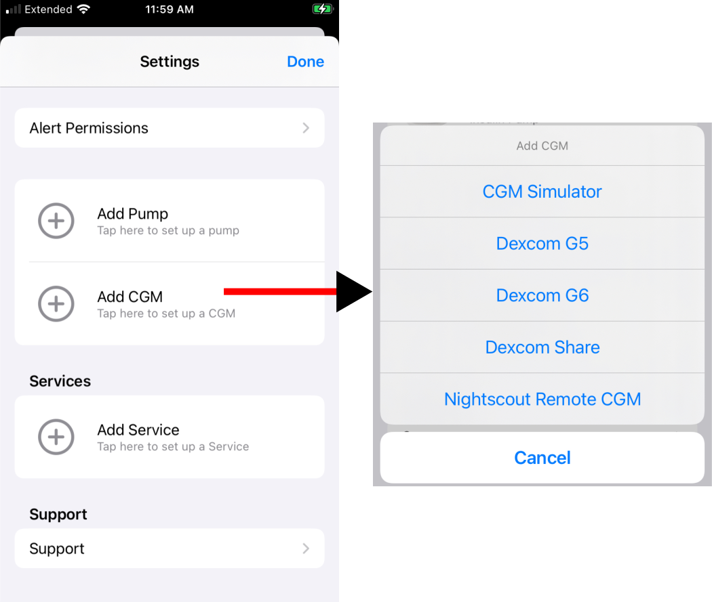
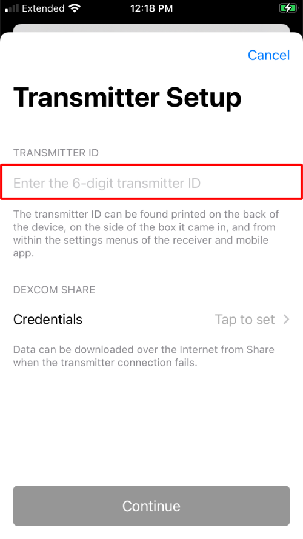
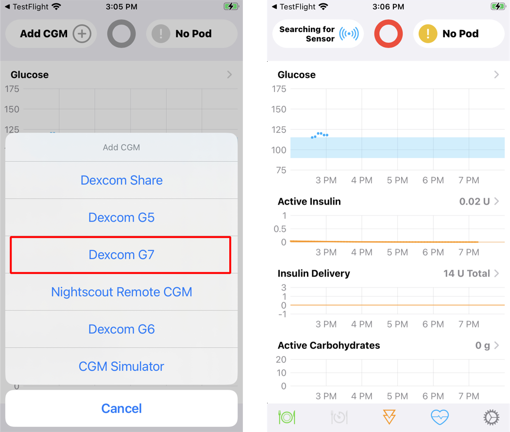
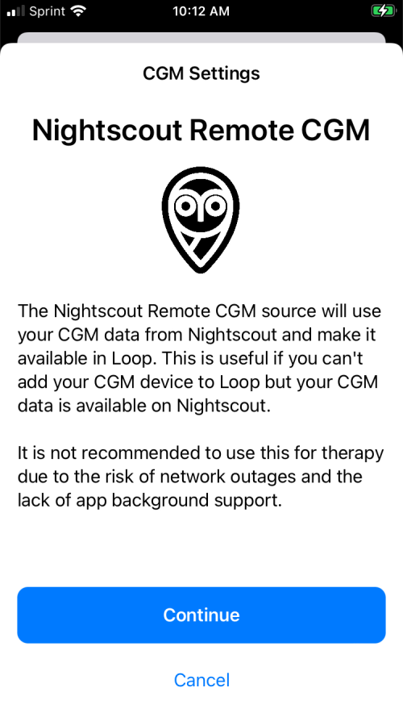
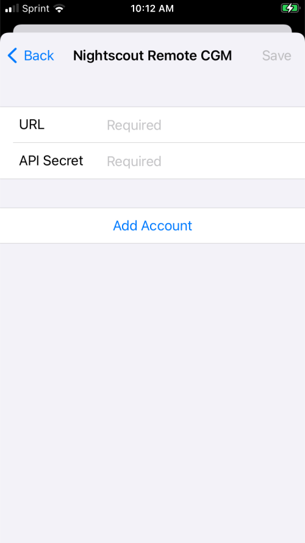

Add CGM
CGM Choices¶
A CGM can be added from the Heads-Up-Display (HUD) or from the Loop Settings screen.
The HUD will look like the graphic below if no CGM or Pump is connected with Loop:

Loop can be connected to the following CGMs:
- CGMs that reside on the same phone (internet not required)
- Dexcom G5
- Dexcom G6 (use this for Dexcom ONE)
- Dexcom G7 (Loop 3 only)
- Minimed Enlite CGM
- Medtronic Pump only
- You must add pump first
- If Enlite is connected to Medtronic pump and that pump is connected to Loop, then an option for Enlite shows up when choosing a CGM, not visible in graphic below
- CGMs that require active internet (WiFi or Cell)
- CGM Simulator - useful to learn the app interface
Add CGM¶
To add a CGM, go to the Settings screen, tap on add CGM and tap on your CGM.

Dexcom G5, G6, ONE¶
To use the Dexcom G5, G6 or ONE:
- Select Dexcom model, use G6 for either G6 or ONE
- Dexcom app must be running on the Loop iPhone and paired to an active transmitter
- User must enter that active transmitter ID in the location indicated by the red rectangle in the graphic below
- Do not enter your Share Credentials
- The graphic below shows
Tap to set - Do not tap, leave it alone
- The graphic below shows
- Only add the transmitter ID to Loop after it is paired with the Dexcom app on your phone

Change Dexcom Transmitter¶
FYI: When You Change Dexcom Transmitters
Before you change Dexcom transmitters, select the Delete CGM button at the very bottom of the CGM info page in Loop. If you leave the transmitter connected in Loop, you may have trouble pairing your new transmitter. If pairing does work, then Loop will not get CGM data from the Dexcom app on your phone.
Follow the instructions here: What do I do when I switch Dexcom transmitters?.
The Dexcom G7 is handled differently - Loop automatically detects when a new sensor/transmitter pair is added to the Dexcom G7 app.
About Dexcom Share credentials¶
You do NOT need your Share account info listed in Loop settings if you are using a G5 or G6 system. The transmitter ID is sufficient. In fact, you should leave your Share credentials blank so that you don't accidentally become internet-dependent for CGM data if you forget to update your transmitter ID when you start a new transmitter.
Dexcom G7¶
This is only available on Loop 3.
You must have the G7 app on the same phone as Loop. When the G7 app switches to the next sensor/transmitter assembly, Loop automatically switches too.
Minimal documentation is provided.

Medtronic Enlite CGM¶
The Medtronic Enlite CGM is only available if you have connected it to your compatible Medtronic Pump.
- Make sure your pump reports the Enlite CGM results
- Go through the Add Pump to Loop steps with that Medtronic pump
- Then do the Add CGM steps and the sensor should be presented as an option
Dexcom Share as a CGM¶
If you need to use Dexcom Share
If the dexcom is on another phone, you can use Share if internet / cell coverage is good.
Dexcom Share is not available for Dexcom ONE CGM.
The Dexcom Share credentials (in other words, account login) is the same as what you used to log in to the active Dexcom app on your iPhone. Dexcom Share account is not always the same login info as your Dexcom Clarity account. The information is entered when you first log in to the app and then is never displayed again, nor visible under any information screens. If you have forgotten your G5/G6 account info, you can delete the Dexcom app and redownload it to try logging in again. This will not cause a restart of any sensor sessions in progress.
If you do not enter your Share credentials correctly into Loop, you will get an error when Loop tries to access your Share account to backfill CGM data. An example of the error message is shown in the graphic below. If you see that message, delete your Share account from Loop settings and try again.

Nightscout Remote CGM¶
If the user is already uploading CGM data to their Nightscout URL, they can select that as a source for CGM data for Loop. The user must acknowledge they understand the risks of using a remote source that requires internet, as shown in the graphic below.
In addition to the risks of missing data if the internet is not reliable, you must also make sure the CGM data sent to Nightscout is reliable.
DANGER - Make sure Nightscout CGM Data is Reliable
Just because you can use Nightscout as a CGM source does not mean you should.
If you decide to use Nightscout as a CGM source, make sure the data stored in Nightscout is reliable. If the app you choose uploads bad results to Nightscout, you don't want Loop to use that bad data.
Sensors that can be added to Nightscout via other apps include Dexcom, some Libre and some Medtronic sensors. Please refer to Nightscout Docs: Configure your Uploader.
There are third party apps that bring Libre data to your Loop phone and there are customization instructions starting at Add Libre App to Loop Phone that explain how to modify Loop 3 to use one of those apps. Please use these steps to get a version of Loop that does not rely on internet access to work.
It is recommended that you use Open Loop during warmup until the new sensor begins to provide reasonable data. This is especially important with European Libre 2 using direct bluetooth connection.
The xDrip4iOS app (which can also be found in the app store under the name Shuggah) may have a problem during warmup of a new sensor (European Libre 2 using direct bluetooth connection). There were two instances of crazy high values being reported and picked up by Loop 3. One Shuggah user and one xDrip4iOS user who connected via Nighscout as a CGM with Loop 3 had serious overdose of insulin because of bad readings with a new sensor. They are both OK but the Loop and xDrip4iOS developers are looking at this event.

The user must enter both the URL and API_SECRET for their site to ensure the security of the data. The URL must start with https:// and cannot have any extra spaces in the line.

When using Nightscout Remote CGM, if the user needs to change credentials or switch to a different CGM, the user must go through the Loop->Settings->CGM menu.
Change CGM¶
To change CGMs, delete your existing CGM and then add a new CGM.
-
For Dexcom G5, G6, ONE or Share, access
Delete CGMby tapping on the CGM Icon in the HUD or by tapping on Loop Settings and selecting CGM and scrolling down. -
For Nightscout Remote CGM, the Nightscout URL is opened when tapping on the CGM icon in the HUD, while the credential sections with the
Delete CGMrow is shown when tapping on Loop Settings and selecting CGM.
After deleting a CGM, the Head-Up-Display at the top of the Loop main screen will show the add CGM icon.